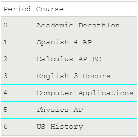

library("gt")Well, I was nerd sniped. Ryan Timpe tweeted an image that made it (at first glance) appear that the gtExtras package allowed users to display a gt table as if it was made by a typewriter on classic notebook paper. That might exist in the near future, but I thought I would try to make a similar image manually.
df <- data.frame(
Period = c("0", "1", "2", "3", "4", "5", "6"),
Course = c("Academic Decathlon", "Spanish 4 AP", "Calculus AP BC", "English 3 Honors", "Computer Applications", "Physics AP", "US History")
)# https://gt.rstudio.com/reference/cell_borders.html
df |>
gt() |>
tab_options(
# table.background.color = "#E8EBE6",
table.font.names = "Courier New"
) |>
tab_style(
locations = cells_body(
columns = everything(),
rows = everything()
),
style = list(
cell_borders(
sides = c("top", "bottom"),
color = "cyan",
style = "solid"
),
cell_fill(color = "#E8EBE6") #https://www.crispedge.com/color/e8ebe6/
)
) |>
tab_style(
locations = cells_body(
columns = "Course",
rows = everything()
),
style = list(
cell_borders(
sides = c("left"),
color = "red",
style = "solid"
),
cell_fill(color = "#E8EBE6")
)
)| Period | Course |
|---|---|
| 0 | Academic Decathlon |
| 1 | Spanish 4 AP |
| 2 | Calculus AP BC |
| 3 | English 3 Honors |
| 4 | Computer Applications |
| 5 | Physics AP |
| 6 | US History |
